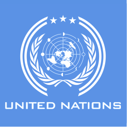

⋅˚₊‧ ଳ ‧₊˚ ⋅ Halo! ⋅ ˚₊‧ ଳ ‧₊˚⋅
Selamat datang di website saya!
Nama saya Carly, dari kelas 91 nomor absen 4.
Website ini dibuat untuk memenuhi tugas Integrated Learning atau IL, dengan mata pelajaran TIK, IPS, dan PPKN.
Pada kesempatan kali saya akan membahas mengenai kerja sama antarnegara terkait SDGs atau Sustainable Development Goals, terkhususnya pada SDG no. 14, yaitu ekosistem lautan.
Semoga kalian dapat mempelajari sesuatu yang bermanfaat dari website saya!
~ Carly ദ്ദി(˵ •̀ ᴗ - ˵ ) ✧
Apa sih itu SDGs?
SDGS (Sustainable Development Goals) atau Tujuan Pembangunan Berkelanjutan adalah suatu program global dengan serangkaian tujuan yang dirancang oleh PBB (Perserikatan Bangsa-Bangsa) pada tahun 2015 untuk dicapai pada tahun 2030. Program ini disepakati oleh negara-negara di dunia untuk mencapai pembangunan yang lebih baik dan berkelanjutan. SDGS bertujuan untuk memenuhi kebutuhan saat ini tanpa mengorbankan kemampuan generasi mendatang, membantu meningkatkan dan mengembangkan negara dengan cara yang berkelanjutan. SDGS membantu mengatasi tantangan-tantangan global dan mengurangi ketimpangan global.
SDGs memiliki 17 tujuan utama, yaitu:
Penjelasan singkat:
- Tanpa Kemiskinan
- Tanpa Kelaparan
- Kehidupan Sehat dan Sejahtera
- Pendidikan Berkualitas
- Kesetaraan Gender
- Air Bersih dan Layak
- Energi Bersih dan Terjangkau
- Pekerjaan Layak dan Pertumbuhan Ekonomi
- Industri, Inovasi, dan Infrastruktur
- Mengurangi Ketimpangan
- Kota dan Permukiman yang Berkelanjutan
- Konsumsi dan Produksi yang Bertanggung Jawab
- Penanganan Perubahan Iklim
- Ekosistem Lautan
- Ekosistem Daratan
- Perdamaian, Keadilan, dan Kelembagaan yang Kuat
- Kemitraan untuk Mencapai Tujuan
Mengentaskan segala bentuk Kemiskinan di mana pun.
Mengakhiri kelaparan mencapai ketahanan pangan dan meningkatkan gizi dan mendukung pertanian berkelanjutan.
Menjamin kehidupan sehat dan mendukung kesejahteraan bagi semua di segala usia.
Menjamin pendidikan yang inklusif dan setara secara kualitas dan mendukung kesempatan belajar seumur hidup bagi semua.
Mencapai kesetaraan gender dan memberdayakan semua perempuan dan anak perempuan.
Menjamin ketersediaan dan manajemen air dan sanitasi yang berkelanjutan untuk semua.
Menjamin akses terhadap energi yang terjangkau, dapat diandalkan, berkelanjutan dan modern bagi semua.
Mendukung pertumbuhan ekonomi yang inklusif dan berkelanjutan, penyerapan tenaga kerja penuh dan produktif serta pekerjaan yang layak bagi semua.
Membangun infrastruktur berketahanan mendukung industrialisasi yang inkulsif dan berkelanjutan serta mendorong inovasi.
Mengurangi kesenjangan di dalam dan di antara negara-negara.
Mewujudkan kota-kota dan permukiman yang inklusif, aman, tangguh dan berkelanjutan.
Menjamin pola produksi dan konsumsi yang berkelanjutan.
Segera mengambil tindakan untuk melawan perubahan iklim dan dampaknya.
Mengkonservasi dan memanfaatkan secara berkelanjutan sumber data maritim, laut , dan samudera untuk pembangunan yang berkelanjutan.
Melindungi, memulihkan, dan mendukung penggunaan yang bekelanjutan terhadap ekosistem daratan.
Memperjuangkan masyarakat yang damai dan inklusi dan menyediakan akses terhadap keadilan bagi semua.
Menguatkan perangkat implementasi dan merevitalisasi kemitraan global untuk pembangunan yang berkelanjutan.
Apa itu PBB?
Seperti yang diketahui, SDGs telah dirancang oleh PBB pada tahun 2015 untuk dicapai pada tahun 2030. Namun, apa itu PBB, dan apa kepanjangannya?
Perserikatan Bangsa-bangsa (PBB) atau United Nations (UN) adalah organisasi internasional yang didirikan pada 24 Oktober 1945 untuk mendorong kerja sama internasional. Badan ini merupakan pengganti Liga Bangsa-Bangsa, dan didirikan setelah Perang Dunia II untuk mencegah terjadinya konflik serupa. Pada saat didirikan, PBB memiliki 51 negara anggota dan saat ini terdapat 193 anggota PBB. Selain negara anggota, beberapa organisasi internasional, dan organisasi antar-negara mendapat tempat sebagai pengamat permanen yang mempunyai kantor di Markas Besar PBB, dan ada juga yang hanya berstatus sebagai pengamat.
PBB bertujuan untuk:
- Menjaga perdamaian dan keamanan dunia.
- Memajukan dan mendorong hubungan persaudaraan antarbangsa melalui penghormatan hak asasi manusia.
- Membina kerja sama internasional dalam pembangunan bidang ekonomi, sosial, budaya, dan lingkungan.
- Menjadi pusat penyelarasan segala tindakan bersama terhadap negara yang membahayakan perdamaian dunia.
- Menyediakan bantuan kemanusiaan apabila terjadi kelaparan, bencana alam, dan konflik bersenjata.
Bagaimana kita bisa berkontribusi dalam membantu mencapai tujuan-tujuan SDGs?
SDG adalah cetak biru untuk mencapai masa depan yang lebih baik dan berkelanjutan bagi semua. Tujuan ini menjawab tantangan global yang kita hadapi, termasuk yang berkaitan dengan kemiskinan, ketimpangan, perubahan iklim, degradasi lingkungan, perdamaian, dan keadilan. Ke-17 Tujuan ini saling terkait, dan agar tidak ada seorang pun yang tertinggal, penting bagi kita untuk mencapai semuanya pada tahun 2030. Oleh karena itu, PBB menyediakan cara-cara untuk kita berkontribusi untuk setiap tujuan SDGs, antara lain: sumbangkan apa yang tidak digunakan; kurangi limbah makanan dan dukung petani lokal; vaksinasi keluarga, mempromosikan dan melindungi kesehatan pribadi dan kesehatan orang-orang di sekitar kita, dan dengan membuat pilihan yang tepat; bantu didik anak-anak di masyarakat; berdayakan perempuan untuk memastikan hak-hak mereka yang sama; hindari pemborosan air; gunakan hanya peralatan dan bola lampu yang hemat energi; ciptakan lapangan kerja bagi kaum muda; bantu danai proyek-proyek yang menyediakan infrastruktur dasar; dukung kaum marginal dan kurang beruntung; bersepeda, berjalan kaki, atau gunakan transportasi umum; daur ulang kertas, plastik, kaca, dan aluminium; hindari kantong plastik untuk menjaga kebersihan laut; bersuara dan bantu berdonasi untuk berbagai tujuan; tanam pohon dan bantu lindungi lingkungan; bela hak asasi manusia; dan lobi pemerintah Anda untuk meningkatkan pembiayaan pembangunan.